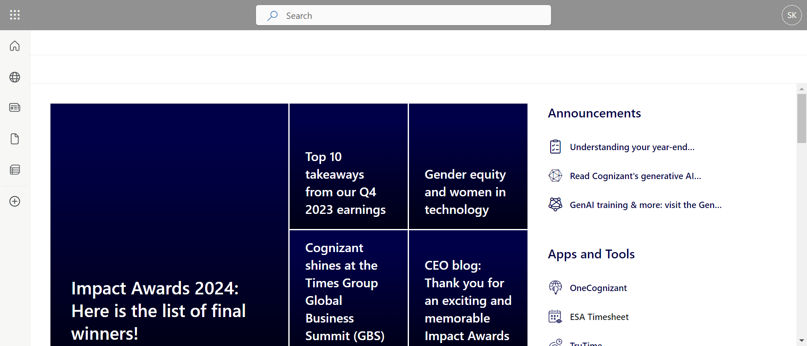

-
Validation of user details at be.cognizant
10:08:43 am / 00:01:01:210 Fail
Validation of user details at be.cognizant
02.15.2024 10:08:43 am 02.15.2024 10:09:44 am 00:01:01:210 · #test-id=1FailSuccessful validation of user detailsGiven user navigates beCognizant portalstepDefinitions.Hooks.Screenshot(io.cucumber.java.Scenario)Successful validation of user detailsThen user click on myaccount menustepDefinitions.Hooks.Screenshot(io.cucumber.java.Scenario)Successful validation of user detailsThen user should see user account details -
Header page exploration at beCognizant portal
10:09:44 am / 00:00:09:902 Fail
Header page exploration at beCognizant portal
02.15.2024 10:09:44 am 02.15.2024 10:09:54 am 00:00:09:902 · #test-id=11FailGetting data from header page of beCognizant portalstepDefinitions.Hooks.setup()Given user navigates beCognizant portalStep skippedWhen user click on Company headerStep skippedThen user stores all header features displayed in Company headerStep skippedWhen user click on Service LinesStep skippedThen user stores all header features displayed in Service LinesStep skippedWhen user click on Sales ResourcesStep skippedThen user stores all header features displayed in Sales ResourcesStep skippedWhen user click on Markets and CountriesStep skippedThen user stores all header features displayed in Markets and CountriesStep skippedWhen user click on Corporate FunctionsStep skippedThen user stores all header features displayed in Corporate FunctionsStep skippedWhen user click on PeopleStep skippedThen user stores all header features displayed in PeopleStep skipped -
Ethics and Compliance
10:09:54 am / 00:00:08:672 Fail
Ethics and Compliance
02.15.2024 10:09:54 am 02.15.2024 10:10:03 am 00:00:08:672 · #test-id=41FailEthics and Compliance PagestepDefinitions.Hooks.setup()Given user navigates beCognizant portalStep skippedWhen user clicks on Corporate FunctionStep skippedThen user hover to Legal & Corporate AffairsStep skippedThen user click on Ethics and ComplianceStep skippedWhen Ethics and Compliance page is visible to userStep skippedThen user prints the details of DirectorStep skippedThen user prints all the links present in pageStep skippedThen user prints the details of EAC officer along with seven elements of ethics and complianceStep skippedWhen user clicks on Ethics and Compliance RisksStep skippedThen user print all the risks present in the web pageStep skipped
-
org.openqa.selenium.remote.UnreachableBrowserException
1 tests
org.openqa.selenium.remote.UnreachableBrowserException
1 failedStatus Timestamp TestName Fail 10:09:44 am stepDefinitions.Hooks.setup() Header page exploration at beCognizant portal.Getting data from header page of beCognizant portal.stepDefinitions.Hooks.setup() -
org.openqa.selenium.NoSuchElementException
1 tests
org.openqa.selenium.NoSuchElementException
1 failedStatus Timestamp TestName Fail 10:09:08 am Then user should see user account details Validation of user details at be.cognizant.Successful validation of user details.Then user should see user account details -
org.openqa.selenium.NoSuchWindowException
1 tests
org.openqa.selenium.NoSuchWindowException
1 failedStatus Timestamp TestName Fail 10:09:54 am stepDefinitions.Hooks.setup() Ethics and Compliance.Ethics and Compliance Page.stepDefinitions.Hooks.setup()
-
@sanity
2 tests
@sanity
2 failedStatus Timestamp TestName Fail 10:09:44 am Getting data from header page of beCognizant portal Header page exploration at beCognizant portal.Getting data from header page of beCognizant portalFail 10:09:54 am Ethics and Compliance Page Ethics and Compliance.Ethics and Compliance Page -
@regression
3 tests
@regression
3 failedStatus Timestamp TestName Fail 10:08:43 am Successful validation of user details Validation of user details at be.cognizant.Successful validation of user detailsFail 10:09:44 am Getting data from header page of beCognizant portal Header page exploration at beCognizant portal.Getting data from header page of beCognizant portalFail 10:09:54 am Ethics and Compliance Page Ethics and Compliance.Ethics and Compliance Page
Started
Feb 15, 2024 10:08:41 am
Ended
Feb 15, 2024 10:10:03 am
Features Passed
0
Features Failed
3
Features
Scenarios
Steps
Timeline
Tags
| Name | Passed | Failed | Skipped | Others | Passed % |
|---|---|---|---|---|---|
| @sanity | 0 | 2 | 0 | 0 | 0% |
| @regression | 0 | 3 | 0 | 0 | 0% |